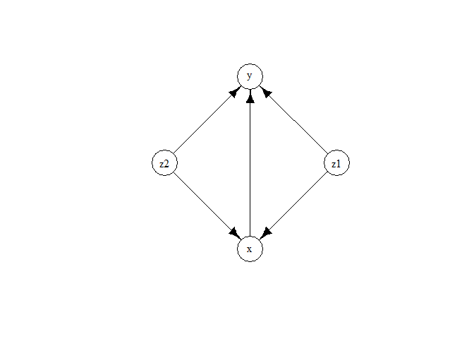

The ExtremeGranger R package is a framework for Granger causality in extremes, designed to identify causal links from extreme events in observational time series. Granger causality plays a pivotal role in understanding directional relationships among time-varying variables. While the task of causal discovery in time series gains heightened importance during extreme and highly volatile periods, state-of-the-art methods primarily focus on causality within the body of the distribution, often overlooking causal mechanisms that manifest only during extreme events. Our framework is designed to infer causality mainly from extreme events by leveraging the causal tail coefficient. It is especially helpful in the presence of hidden confounders. Our method is non-parametric, can handle non-linear and high-dimensional time series. The methodology was introduced in Bodik and Pasche (2024).
Installation
To install the latest version of ExtremeGranger, in an R session, run:
# install.packages("devtools")
devtools::install_github("opasche/ExtremeGranger")Example
Here is an usage example with a 4-dimensional toy VAR time series with lag = 2.
# Load the ExtremeGranger R package
library(ExtremeGranger)
# Load EnvStats for the example (or any other package that can generate Pareto noise)
library(EnvStats)
# Example: Generating a 4-dimensional VAR time series with lag = 2
n <- 5000
set.seed(0) # for reproducibility
epsilon_x <- rpareto(n, 1, 1)
epsilon_y <- rpareto(n, 1, 1)
epsilon_z1 <- rpareto(n, 1, 1)
epsilon_z2 <- rpareto(n, 1, 1)
x <- rep(0, n)
y <- rep(0, n)
z1 <- rep(0, n)
z2 <- rep(0, n)
for (i in 3:n) {
z1[i] <- 0.5 * z1[i - 1] + epsilon_z1[i]
z2[i] <- 0.5 * z2[i - 1] + epsilon_z2[i]
x[i] <- 0.5 * x[i - 1] + 0.5 * z1[i - 2] + 0.5 * z2[i - 1] + epsilon_x[i]
y[i] <- 0.5 * y[i - 1] + 0.5 * z1[i - 1] + 0.5 * z2[i - 2] + 0.2 * x[i - 1] + epsilon_y[i]
}
# Running the extreme causality tests
z <- data.frame(z1, z2)
result_xy <- Extreme_causality_test(x, y, z, max_causal_lag = 2, p_value_computation = FALSE)
result_yx <- Extreme_causality_test(y, x, z, max_causal_lag = 2, p_value_computation = FALSE)
# Estimating the full causality graph
w <- data.frame(z1, z2, x, y)
G <- Extreme_causality_graph(w, max_causal_lag = 2) # Try it out also with lag = 1. You will see that the lagged edges disappearOn can then use, for example, the igraph package for plotting the estimated graph.
# Visualizing the final graph estimate using the igraph package
library(igraph)
graph <- graph_from_edgelist(G$G)
V(graph)$name <- names(w)
plot.igraph(
graph,
layout = layout_nicely(graph),
vertex.label = V(graph)$name,
margin = c(0, 0, 0, 0),
vertex.color = "white",
vertex.label.color = "black",
vertex.size = 30,
edge.color = "black"
)
References
Bodik, J. and Pasche, O. C. (2024). “Granger Causality in Extremes.” ArXiv Preprint 2407.09632. doi:10.48550/arXiv.2407.09632.